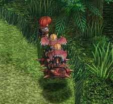
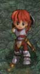
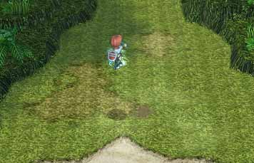

| 概要 | 情報 | ボス戦 |
| 穴場 | か･タマリ場 | 正統･穴場 |
| アイテム一覧 | 攻略チャート | 地図 |
| 敵キャラ一覧 | 変な写真 | Ys VI 攻略へ |
| 無敵のウインド 普通はジャンプしても、中に入れない宝箱。当然、普通に進んでも 衝突して宝箱内部には入れません。 しかし、剣技ウインドを使用していると、アドルは宝箱をすり抜け ます。また、回転が止まると、ゆっくりと宝箱から押し出されます。 これは全ての宝箱で使える技なので、一度試してみてはどうでしょ うか? 成功しても、何も出る訳はありませんが･･･ |
| 下ろせない～ モンスターを足につけて、落としてくる鳥がいますよね? それと、クアテラ樹海の木の一部は、ジャンプして乗ることができ るのをご存じですよね? そこで、鳥が出るマップで、かつアドルが木の上に乗っていると、 鳥はモンスターを下ろすことができず、ずーっと羽ばたいています。 緊急の避難方法として使えるかもしれませんが、役に立ったことがあ りません。  |
| 剣技フレイムって･･･ 剣技フレイムには3パターンあります。 右に振りかぶり斬りつけるもの、左に振りかぶり斬りつけるもの、 そして真上に振りかぶり斬りつけるものです。 剣技を連続で使用すると、右、左、真上の順で行動し、発動時の 音が高くなります。しかし、攻撃のヒット数や威力などは変わらな いと思います。

(左から、右振り、左振り、真上) |
| 減速 クアテラ樹海にはリスのようなモンスターがいます。やつの攻撃手段 は体当たりただ1つ。 "下ろせない～"同様、木の上に乗った状態でリスの攻撃を受けると、 ダメージを受けずにアドルの位置が動きます。どうやら、体当たりの速 度が遅くなり、ダメージを受けるほど威力がないみたいです。ただし、 ごくまれにダメージを受けることがあるのでご注意を。 |
| 空中剣技 リヴァルト装備時に、攻撃を三回、素早くジャンプ、そして攻撃の順に ボタンを押すと、画像のように空中で剣技を使用できます。また、タイミ ングよくボタンを押し続けることで、着地後に後4回剣技を発動させること も可能です。  |
| 実は使えない魔法 (魔法は全て便利です) 忘却の遺跡でアドルが下の階層へ落ちる時に、数秒間空中を落下します。 その短い時間に、リヴァルトの魔法を発動してみてください。一瞬、アドル の周りに竜巻が起こりますが、その後はアドルが回転しながら落下するだけ で竜巻がアドルを守ってくれません。 時間が短すぎ、キャプチャーはできませんでした。 |
| 概要 | 情報 | ボス戦 |
| 穴場 | か･タマリ場 | 正統･穴場 |
| アイテム一覧 | 攻略チャート | 地図 |
| 敵キャラ一覧 | 変な写真 | Ys VI 攻略へ |